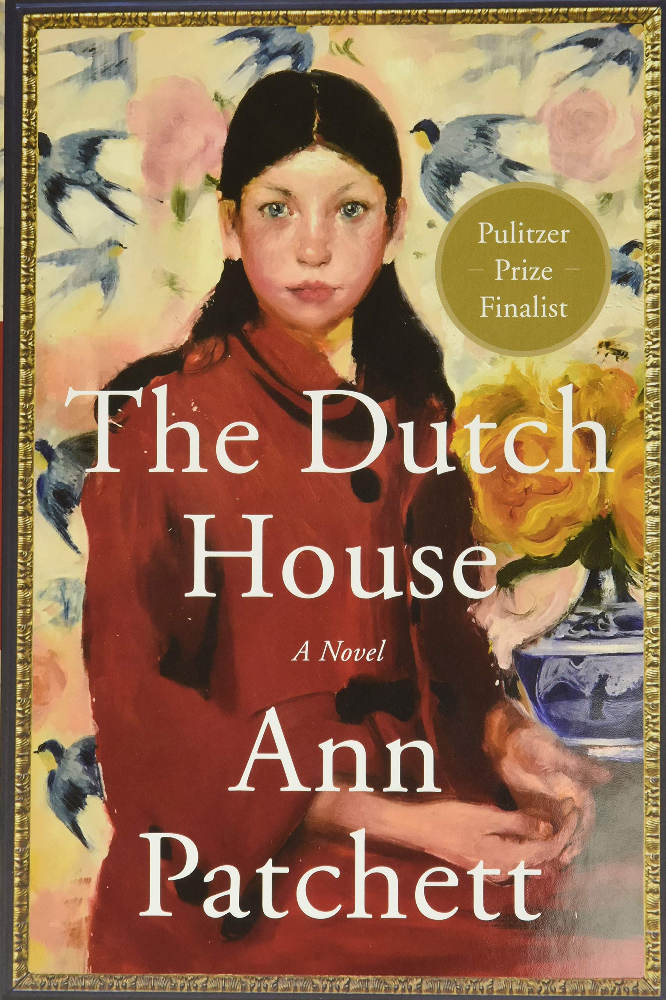
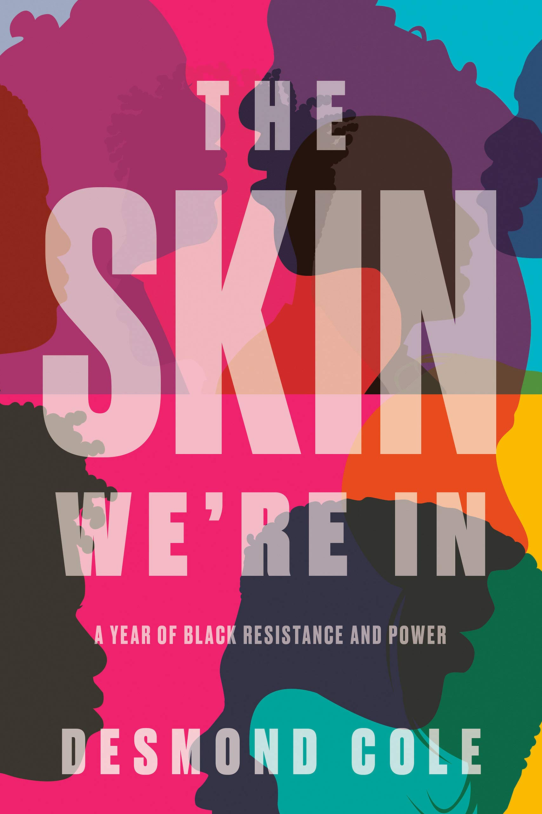
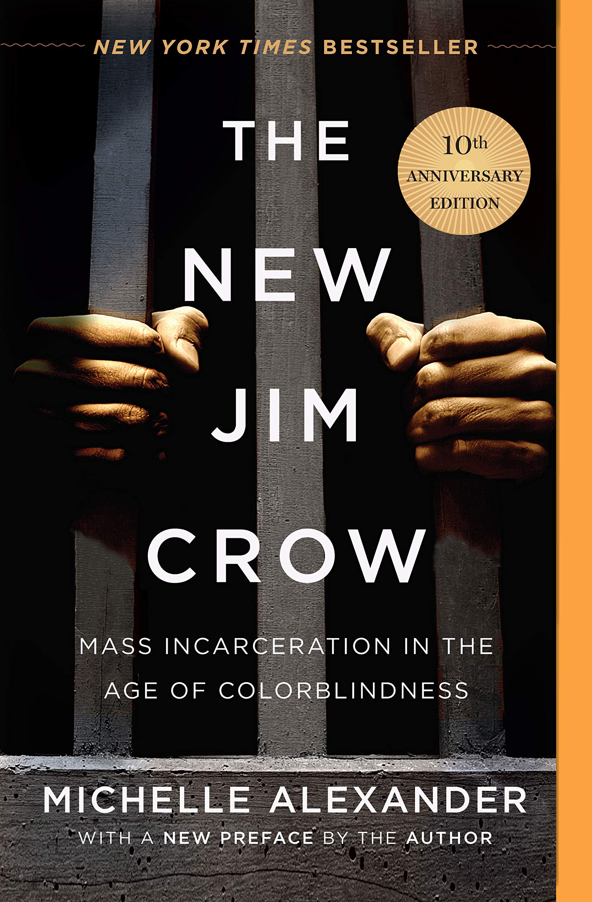

The Dutch House by Ann Patchett
Key themes: Complicated family relations, haunting past
Rating: 3.5 stars
The Kite Runner by Khaled Hosseini
Key themes: Taliban, War in Afghanistan, racial injustice
Rating: 5 stars

Me Before You by Jojo Moyes
Key themes: Living with a disability, romance
Rating: 3 stars

The Skin We're In by Desmond Cole
Key themes: Police brutality, social justice
Rating: 4 stars
Circe by Madeline Miller
Key themes: Ancient Greek mythology, strong female lead
Rating: 4.5 stars

Little Fires Everywhere by Celeste Ng
Key themes: Classism, racism
Rating: 5 stars

Where the Crawdads Sing by Delia Owens
Key themes: Strong female lead, nature, coming-of-age
Rating: 5 stars

The Rosie Project by Graeme Simsion
Key themes: Romance, neurodiversity
Rating: 5 stars

The New Jim Crow by Michelle Alexander
Key themes: Mass incarceration, racial injustice
Rating: 5 stars
Velocity by Dean Koontz
Key themes: Psychological thriller
Rating: 1 star